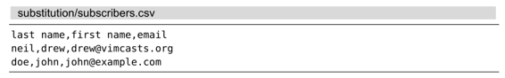
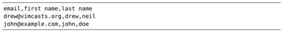

技巧93使用子匹配重排CSV文件的字段
在本节中，我们将会看到如何从查找模式中捕获子匹配，并在替换域中引用它们。
假设有一个CSV格式的文件，其中包含了一份含有电子邮箱地址以及姓名的列表。

现在假设我们想交换这些字段的次序，即把电子邮箱放到首列，其次是名字，最后一列为姓氏。通过使用以下substitute命令，我们可以做到这一点：
➾ /\v^([^,]*),([^,]*),([^,]*)$
➾:%s//\3,\2,\1
在这个模式中，[^,]会匹配除逗号以外的任何字符，因此，([^,]*)不仅会匹配0次或多次连续的非逗号字符，而且会把捕获到的结果当作子匹配（参见技巧75）。将此表达式重复3次，即可分别捕获CSV文件中3组字段中的每一列内容。
我们可以通过记号 \n(1)来引用这些子匹配。因此，在替换域中，\1表示姓氏，\2表示名字，\3表示电子邮箱。在把一行内容切分成单独的字段后，我们可以把它们按照设想的顺序进行重新排列，即\3，\2，\1 —— 电子邮箱，名字，姓氏。
命令的运行结果如下所示：
